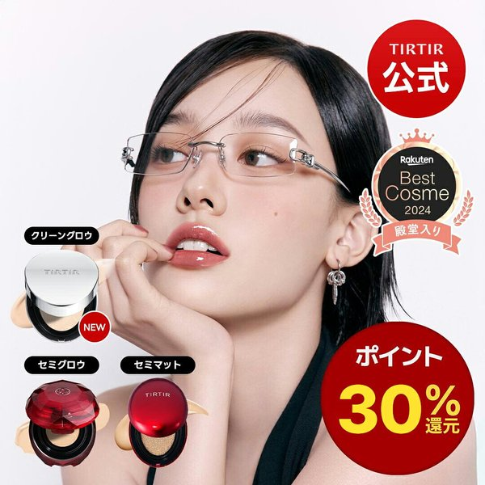
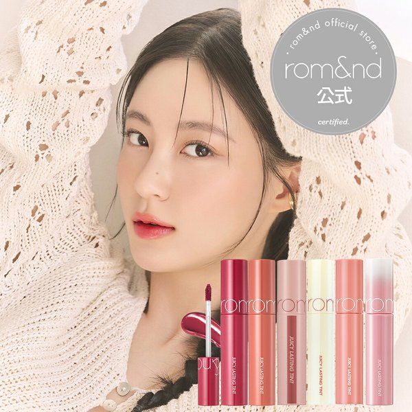
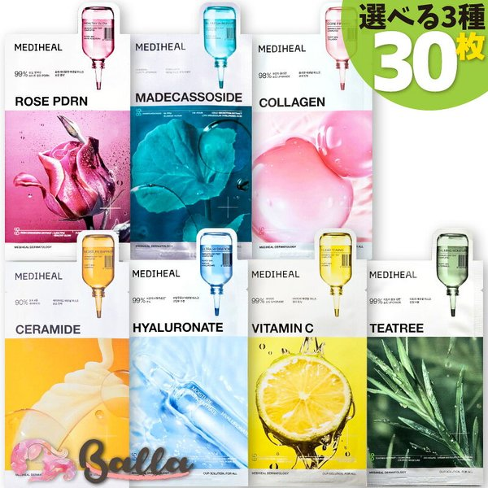
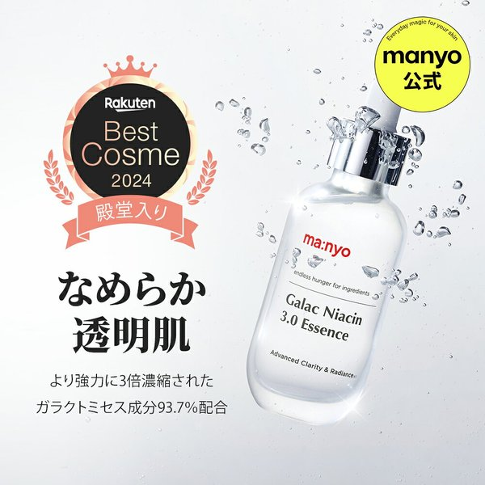
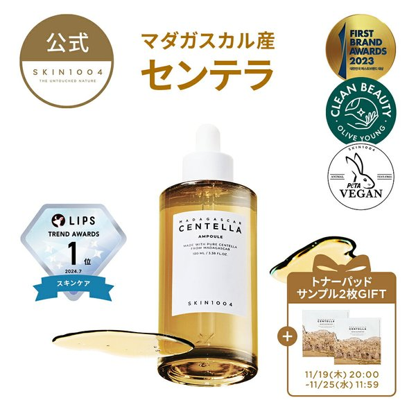
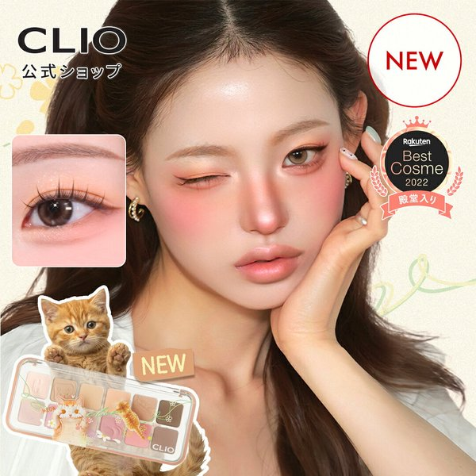
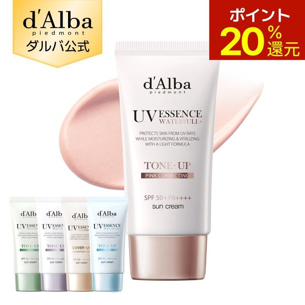
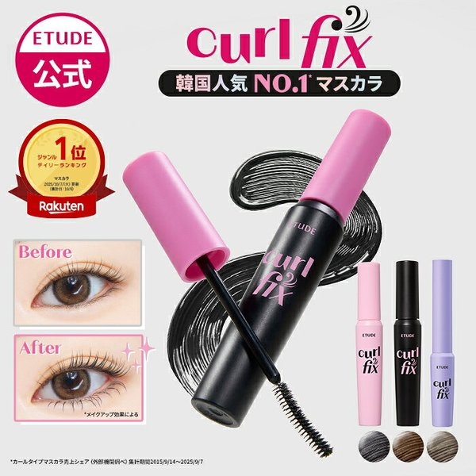
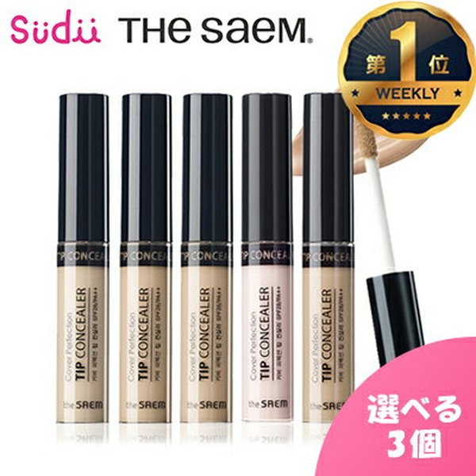
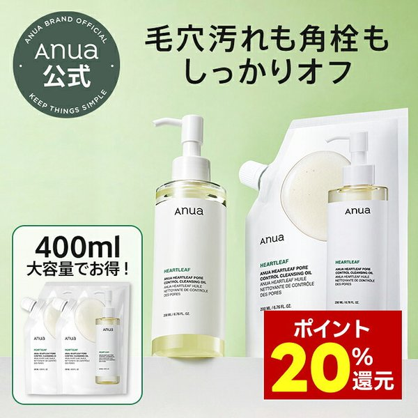

【2026年・韓国コスメ】ベースメイク＆毛穴ケアの10選｜TIRTIRクッション・rom&ndティント・MEDIHEALシートマスク・manyo導入美容液・SKIN1004アンプル・CLIOアイパレットを実売価格で比較
韓国コスメの強みは、ベースメイクの「崩れにくさ」と、スキンケアの「毛穴・皮脂への設計」です。日本の気候でも崩れにくいクッション、色が残るティント、毎日使えるシートマスクと、日本のプチプラとは違う方向で作られています。
選ぶ軸は3つです。「まず肌質」。皮脂が多いなら密着型のクッションと皮脂を落とすクレンジング、乾燥肌ならツヤ系のクッションと保湿のアンプルを選びます。「次に手順の数」。クレンジングオイルはダブル洗顔不要、UV下地は日焼け止めと下地が1本になり、朝と夜の手順が減ります。「最後に色の選び方」。リップとコンシーラーは色数が多く、番号で失敗しやすいので、レビューの写真を確認してから決めます。なお、レビュー件数が50件に満たない商品は記事内に実数を明記しています。
本記事では、楽天市場で人気・高評価の韓国コスメ・ベースメイク＆毛穴ケア10選を、実売価格とレビュー評価つきで写真付き紹介します。
- おすすめ10選 スペック・特徴比較表
- BEST 1｜TIRTIR マスクフィットクッション（レッド／ルビーメッシュ／クリスタルメッシュ／AI）
- BEST 2｜rom&nd ジューシーラスティングティント 5.5g（1〜39番）
- BEST 3｜MEDIHEAL エッセンシャル シートマスク 30枚（3種類から選べる）
- BEST 4｜manyo ガラクナイアシン3.0エッセンス（2+1セット）
- BEST 5｜SKIN1004 センテラ アンプル（マダガスカル産CICA）
- BEST 6｜CLIO プロ アイ パレット エアー（12色）
- BEST 7｜d'Alba トーンアップUV下地 SPF50+ PA++++ 50ml
- BEST 8｜ETUDE カールフィックスマスカラ
- BEST 9｜THE SAEM チップコンシーラー（13種から3個選べる）
- BEST 10｜Anua ドクダミポアコントロールクレンジングオイル 200ml
- 【読者負担0円】買わなくても得する無料サービス
- まとめ：韓国コスメのベースメイク10選の選び方
| 順位 | 商品名 | ブランド | 最大の特徴・おすすめ理由 | 総合評価 |
|---|---|---|---|---|
| BEST 1 | TIRTIR マスクフィットクッション（レッド／ルビーメッシュ／クリスタルメッシュ／AI） | TIRTIR（ティルティル） | 密着してマスクに色移りしにくい | 4.31 |
| BEST 2 | rom&nd ジューシーラスティングティント 5.5g（1〜39番） | rom&nd（ロムアンド） | 色が唇に残りやすい | 4.55 |
| BEST 3 | MEDIHEAL エッセンシャル シートマスク 30枚（3種類から選べる） | MEDIHEAL（メディヒール） | 個包装30枚で管理しやすい | 4.79 |
| BEST 4 | manyo ガラクナイアシン3.0エッセンス（2+1セット） | manyo（マニョ） | 洗顔後すぐ使える導入美容液 | 4.52 |
| BEST 5 | SKIN1004 センテラ アンプル（マダガスカル産CICA） | SKIN1004（スキン1004） | ツボクサエキス主体のシンプル処方 | 4.63 |
| BEST 6 | CLIO プロ アイ パレット エアー（12色） | CLIO（クリオ） | 12色入りで1つで完結する | 4.58 |
| BEST 7 | d'Alba トーンアップUV下地 SPF50+ PA++++ 50ml | d'Alba（ダルバ） | 日焼け止めと下地が1本で済む | 4.45 |
| BEST 8 | ETUDE カールフィックスマスカラ | ETUDE（エチュード） | カールが下がりにくい | 4.46 |
| BEST 9 | THE SAEM チップコンシーラー（13種から3個選べる） | THE SAEM（ザセム） | 13色から3個を選べる | 4.68 |
| BEST 10 | Anua ドクダミポアコントロールクレンジングオイル 200ml | Anua（アヌア） | ドクダミ配合で皮脂と毛穴をケア | 4.69 |
TIRTIR マスクフィットクッション（レッド／ルビーメッシュ／クリスタルメッシュ／AI）

TIRTIRのマスクフィットクッションは、密着して崩れにくいクッションファンデです。レッドはカバー力、ルビーメッシュはツヤ、クリスタルメッシュは薄づき、AIは色選びを補助する設計で、仕上がりの好みで選べます。マスクの内側に色が移りにくいのも、この商品が選ばれる理由です。楽天市場での実売価格は約2,970円（2026年11月時点）。
- 密着してマスクに色移りしにくい
- 4タイプから仕上がりで選べる
- 赤みや毛穴をカバーできる
- 色展開が多く、明るさの番号を間違えると顔色が沈む
rom&nd ジューシーラスティングティント 5.5g（1〜39番）

rom&ndのジューシーラスティングティントは、塗った直後はツヤ、時間が経つと色が唇に残るリップティントです。5.5gの容量で、39色から選べます。飲食のあとも血色が残るので、塗り直す回数を減らしたい日に向きます。楽天市場での実売価格は約980円（2026年11月時点）。
- 色が唇に残りやすい
- 39色から選べる
- ツヤと血色の両方が出る
- ツヤは時間とともに落ちるので、潤いが欲しい日は上から重ねる
MEDIHEAL エッセンシャル シートマスク 30枚（3種類から選べる）

MEDIHEALのエッセンシャルシートマスクは、1枚ずつ個包装されたシートマスク30枚セットです。ロゼPDRN、セラミド、コラーゲン、ビタミンC、ティーツリーから3種類を選べ、用途に合わせて使い分けられます。乾燥が気になる日に、洗顔後すぐ貼れる手軽さが強みです。楽天市場での実売価格は約4,390円（2026年11月時点）。
- 個包装30枚で管理しやすい
- 3種類から目的で選べる
- 洗顔後すぐ貼れる手軽さ
- 30枚入りなので、毎日使うと1か月ほどで使い切る
manyo ガラクナイアシン3.0エッセンス（2+1セット）

manyoのガラクナイアシン3.0エッセンスは、ガラクトミセス培養エキスとナイアシンアミドを配合した導入美容液です。洗顔後すぐに使うことで、後から重ねる化粧水が入りやすくなります。毛穴の目立ちと肌のキメを同時に整えたい人に向く処方です。楽天市場での実売価格は約2,860円（2026年11月時点）。
- 洗顔後すぐ使える導入美容液
- ナイアシンアミド配合でキメを整える
- 2+1のセットで1本あたりが安くなる
- 3本セットなので、使い切る前に肌に合うかを見極めたい人は注意
SKIN1004 センテラ アンプル（マダガスカル産CICA）

SKIN1004のセンテラアンプルは、マダガスカル産のツボクサエキスを主成分にした美容液です。敏感肌向けのシンプルな処方で、赤みや乾燥が気になる日に使いやすいのが特徴。スポイトで量を調整でき、化粧水の前後に1〜2滴を馴染ませます。楽天市場での実売価格は約2,500円（2026年11月時点）。
- ツボクサエキス主体のシンプル処方
- 敏感肌の赤みケアに向く
- スポイトで量を調整できる
- 保湿と鎮静が中心で、美白やハリの効果は他の美容液で補う
CLIO プロ アイ パレット エアー（12色）

CLIOのプロ アイ パレット エアーは、12色を1つのケースにまとめたアイシャドウパレットです。粉が細かく、指でもブラシでもムラになりにくいのが特徴。締め色とラメが同じパレットに入っているので、朝のアイメイクが1つで完結します。楽天市場での実売価格は約2,990円（2026年11月時点）。
- 12色入りで1つで完結する
- 粉が細かくムラになりにくい
- 締め色とラメが揃う
- 12色のうち、普段使わない色が出やすい
d'Alba トーンアップUV下地 SPF50+ PA++++ 50ml

d'AlbaのトーンアップUV下地は、日焼け止めと化粧下地を1本にした商品です。SPF50+・PA++++で、白浮きしにくいツヤのある仕上がりになります。保湿成分が入っているため、乾燥する季節でもファンデーションののりが悪くなりにくいのが利点です。楽天市場での実売価格は約2,299円（2026年11月時点）。
- 日焼け止めと下地が1本で済む
- SPF50+・PA++++
- ツヤが出て乾燥しにくい
- 選べるタイプがあり、色味の違いを確認してから選ぶ
ETUDE カールフィックスマスカラ

ETUDEのカールフィックスマスカラは、まつ毛を上向きに固定するカールキープに寄せたマスカラです。お湯で落とせるタイプで、クレンジングでこすらずに落とせます。ダマになりにくく、まつ毛が細い人でもセパレートした仕上がりになります。楽天市場での実売価格は約1,100円（2026年11月時点）。
- カールが下がりにくい
- お湯で落とせる
- ダマになりにくい
- カールキープ重視のぶん、ボリュームは控えめ
THE SAEM チップコンシーラー（13種から3個選べる）

THE SAEMのチップコンシーラーは、筆先で直接置ける液体タイプです。13種から3個を選べるセットで、クマ・赤み・ニキビ跡を色で使い分けられます。SPF28・PA++で、夕方の崩れを抑えたい部分に少量を置いて馴染ませます。楽天市場での実売価格は約1,500円（2026年11月時点）。
- 13色から3個を選べる
- 部分ごとに色を使い分けられる
- SPF28・PA++で日中の崩れを抑える
- 3個セットなので、色が合わないと余らせることになる
Anua ドクダミポアコントロールクレンジングオイル 200ml

Anuaのクレンジングオイルは、ドクダミエキスを配合した毛穴ケア向けのオイルです。メイクと皮脂を浮かせて落とし、洗い上がりはつっぱりにくい仕上がり。ダブル洗顔不要で、帰りが遅い日でも手順を増やさずに済みます。楽天市場での実売価格は約2,300円（2026年11月時点）。
- ドクダミ配合で皮脂と毛穴をケア
- ダブル洗顔不要
- 洗い上がりがつっぱりにくい
- オイルタイプなので、乳化を丁寧にしないと残りやすい
この記事の商品を買う前に、まずは無料で得する選択肢をチェック。どれも登録・利用は0円で、無料期間中に解約すれば料金はかかりません。読みたい雑誌がある人、ポイントを貯めたい人、アンケートなら気軽という人、それぞれに合うものを選べます。
初回31日無料・無料期間中に解約すれば0円 → 楽天ポイントモール｜登録無料で毎日ポイ活
買い物なしでもポイントが貯まる無料サービス → 楽天インサイト｜アンケートに答えてポイント
登録無料・すきま時間のアンケートで貯まる → 楽天カード｜年会費永年無料
新規発行・年会費ずっと0円 →
4つのサービスの違いと使い分けは「出費0円で得する！買わずにポイントが貯まる無料サービス厳選4選」でまとめています。
💡 まとめ：韓国コスメのベースメイク10選の選び方
韓国コスメは、ベースメイクとスキンケアを1本ずつ軸にすると揃えやすくなります。ベースは、TIRTIRのマスクフィットクッションに、d'AlbaのトーンアップUV下地、THE SAEMのチップコンシーラーを重ねる流れが、崩れにくさと手軽さのバランスが取れています。血色を足すならrom&ndのジューシーラスティングティント、目元はCLIOの12色アイパレットとETUDEのカールフィックスマスカラ。夜はAnuaのクレンジングオイルで落とし、乾燥が気になる日はMEDIHEALのシートマスクを1枚。毛穴とキメを整えたいなら、洗顔後すぐにmanyoのガラクナイアシン、赤みが気になる日はSKIN1004のセンテラアンプルを足します。まずはクッションとクレンジングの2つから試すと、自分の肌に合うかを短い期間で判断できます。
楽天市場では「5と0のつく日」や「お買い物マラソン」などのキャンペーンに合わせて購入すると、ポイント還元が最大化してお得に手に入ります。ぜひチェックしてみてくださいね。